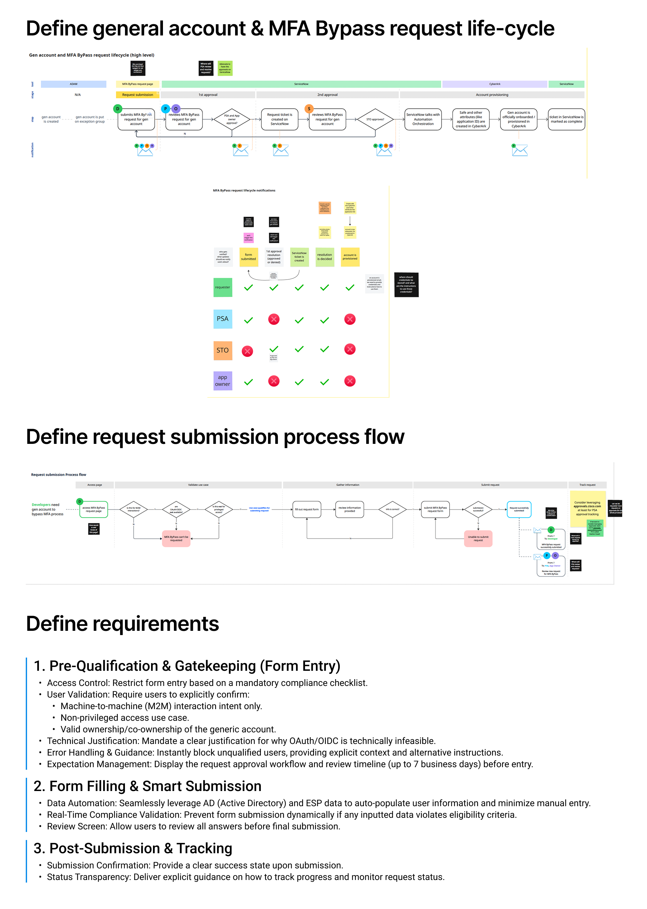
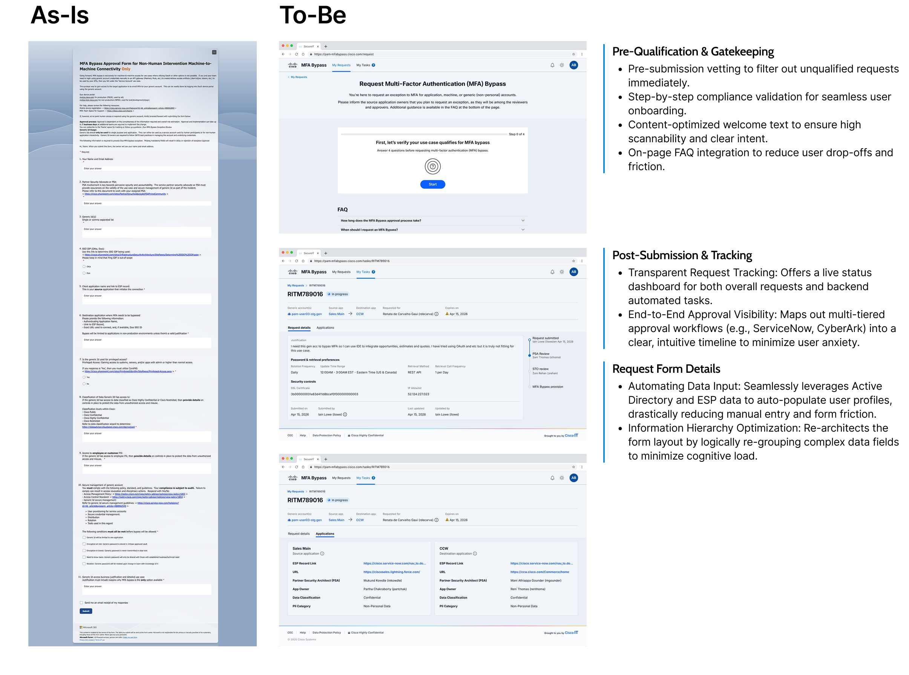

A secure, low-visibility path for handling legitimate MFA bypass requests — balancing strict enterprise security protocols with a frictionless path for developers and support teams.
Framing the Problem

Goal
Enhance the overall user journey for the MFA Bypass request process, and improve the MFA Bypass Approval form itself — so the right requests move quickly and the wrong ones get redirected before they become tickets.
Role
Key Impact
Balanced strict security protocols with developer velocity by implementing a secure, low-visibility entry point.
Eliminated manual data entry via smart automation (AD/ESP integration), substantially reducing form drop-off for valid use cases.
Guided unqualified users to alternative authentication options instantly, preventing redundant operational support tickets.
Deliverables
Finalized the high-fidelity prototype through multiple rounds of internal and external feedback sessions.

Clear data hierarchy matters most when people are filling out a form under stress. Designing for the MFA Bypass workflow meant treating that hierarchy — not the number of fields — as the real usability problem.
Learning
Balancing enterprise security with frictionless UX: designing the MFA Bypass workflow taught me how to strictly adhere to enterprise security compliance while minimizing user friction. Clear data hierarchy in forms is critical when users are under high-stress, time-sensitive situations.
Cross-functional alignment in technical domains: collaborating closely with the Security Engineering team highlighted the importance of translating complex technical requirements into intuitive user flows. Using Jira Align and Confluence helped synchronize stakeholder feedback, ensuring the final prototype met both engineering constraints and user needs.